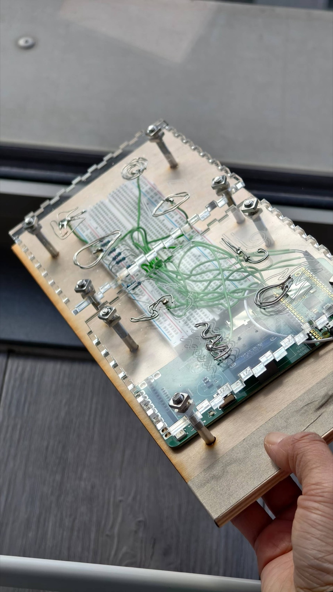

TouchDesigner-Arduino practice, 2026.3
This is an interactive sensory installation grounded in physical computing and generative art. Utilizing a Pico W microcontroller, the project translates the ancient symbolic logic of the Bagua into a contemporary tactile touchpad. Audiences engage with the piece by touching handcrafted metallic icons, which trigger a real-time visual synthesis of diverse digital landscapes within TouchDesigner.
这是一件基于物理计算与生成艺术的互动感官装置。项目利用Pico W微控制器，将八卦古老的象征性逻辑转化为当代的触控面板。观众通过触摸手工制作的金属图标与作品互动，这些图标会触发TouchDesigner中实时生成的多种数字景观的视觉合成。
The touchpad is constructed from a layered combination of transparent acrylic and a wooden base. The 8 foundational icons were first laser engraved onto the transparent acrylic surface. I then manually formed the icon contours using iron wire and secured them through solder wire welding. The Pico W monitors capacitive changes across the 8 metallic icons. Interaction is activated only when the system detects simultaneous contact on two distinct icons. Data is transmitted wirelessly to TouchDesigner via the OSC protocol.
In TouchDesigner, I utilize a Table DAT as a Static Database to organize the metadata for the 28 unique scenarios. This acts as a Lookup Table, where each row stores specific artistic parameters, such as IDs, speed, and color profiles for each hexagram. By converting the binary weighted CHOP signals into DAT indices, the system can efficiently "query" the table to trigger the correct visual output. This real-time visual synthesis combines 28 generative atmosphere layers with 5 virtual space images. The system dynamically recomposes these assets based on the dual touch input, transforming a technological interaction into a meditative quest for "Emptiness".
触控板由透明亚克力层与木质基底叠加而成。首先，8个基础图标被激光雕刻在透明亚克力表面，随后我使用铁丝手工塑造图标轮廓，并通过焊锡线进行固定。Pico W 通过检测8个金属图标上的电容变化来实现交互。当系统检测到两个不同图标同时接触时，交互才会被激活。数据通过OSC协议无线传输至TouchDesigner。
在TouchDesigner中，我采用一个Table DAT作为静态数据库，用于组织28种独特场景的元数据。该数据库充当查找表，每行存储特定的艺术参数，例如每个卦象的ID、速度和颜色配置文件。通过将二进制加权CHOP信号转换为DAT索引，系统可高效地“查询”表格以触发正确的视觉输出。这种实时视觉合成结合了28层生成性氛围层与5个虚拟空间图像。系统根据双触输入动态重组这些资源，将技术互动转化为对“空性”的冥想式追寻。
